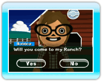

Niveau du Ranch
Le niveau du Ranch est déterminé par sa taille. Plus il est
grand, plus son niveau est élevé.
Améliorer le niveau du Ranch
Quand tu amènes un certain nombre de Pokémon au Ranch,
Hayley fait monter son niveau et l'agrandit dès le jour suivant.
Fonctions disponibles après
la montée en niveau du ranch
- Le nombre de Pokémon ou de Mii que tu peux faire venir au Ranch augmente.
- Free Mode (mode déplacement libre).
- Tu peux ajouter des Pokémon à tes favoris et ne voir que ceux-là dans le Ranch.
-
Tu reçois d'autres Toy Boxes (coffres à jouets).
(→ p.21).
Pour ouvrir un coffre à jouets, appuies sur
 +
+
 pour prendre le coffre et le lâcher, puis un jouet en sortira.
pour prendre le coffre et le lâcher, puis un jouet en sortira.
- Tu peux souvent échanger un Pokémon avec Hayley.
Evénements disponibles avant que
le Ranch gagne des niveaux
- 
Quand tu commences la partie, tu es invité dans un Ranch par
un propriétaire.
-
Des choses amusantes se produisent lorsque tu déposes un certain
nombre de Pokémon ou certains Pokémon.
Que se passe-t-il si j'agite la télécommande Wii?
-
Lorsque tu joues et que tu agites la télécommande Wii,
quelque chose d'intéressant se passera.